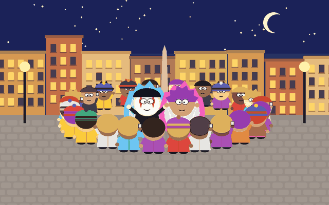

Le battaglie di Aura sono un fenomeno di piazza mondiale, emerso nel pieno dell’estate 2026 nelle strade dell’America Latina e approdato in Italia nell’autunno dello stesso anno: dai cortili delle scuole del Bresciano a Vicenza, fino a Roma.¹
Le battaglie funzionano così: un gruppo di giovani si incontra in uno spazio pubblico e, generalmente, forma un capannello, un assembramento. Al centro dell’arena fatta di corpi, due persone – talvolta con il volto dipinto o con maschere surreali – si sfidano in una battaglia di gesti presi dai classici meme o trend di internet: il 6-7, i palmi rivolti all’insù che salgono e scendono come i piatti di una bilancia; il «Siuuu» con cui Cristiano Ronaldo esulta dopo un gol; il mewing, l’indice che percorre in silenzio la linea della mascella; il double biceps, il tornado shot, la piroetta sulle punte alla Michael Jackson; le mosse prese in prestito da Fortnite; e, capostipite di tutti, la danza a prua di Rayyan Arkan Dikha, il bambino indonesiano diventato nel 2025 l’icona dell’aura farming.³ Alla fine della battaglia il pubblico decreta chi tra gli sfidanti ha più Aura.
Aura viene dal latino aura, «brezza, soffio d’aria», a sua volta dal greco αὔρα: nell’Odissea è la brezza fredda che sale dal fiume prima dell’alba. È aria che si muove: non si vede, ma la si sente sulla pelle. È sentire il mistero del giorno che viene. Dante la fa tremare di sospiri nel Limbo, Petrarca ci nasconde dentro Laura. La medicina, già con Galeno, chiama aura il soffio che annuncia la crisi epilettica; la parapsicologia, l’alone che avvolgerebbe i corpi. E quindi Dragon Ball: l’aura diventa la fiamma visibile che avvampa intorno ai combattenti quando caricano il ki, cambia colore a ogni trasformazione, fino all’oro del Super Saiyan, e la forza si misura in numeri, letti dallo scouter. È dagli anime che l’aura passa ai meme: Piccolo, immobile sull’orlo di una rupe con il mantello al vento, ne è un’icona. Oggi, nel gergo delle piattaforme, l’aura si conta: +1000 aura, −500 aura, punti che si guadagnano e si perdono come in un videogioco. E farmare, parola presa dal gaming, vuol dire accumularli ripetendo all’infinito le stesse azioni.⁴
Nel saggio L’opera d’arte nell’epoca della sua riproducibilità tecnica (1936), Walter Benjamin definisce l’aura come «l’apparizione unica di una lontananza, per quanto vicina essa possa essere». E la spiega con un’immagine: seguire, in un pomeriggio d’estate, il profilo di una catena di montagne all’orizzonte, o un ramo che getta la sua ombra su chi riposa, significa respirare l’aura di quei monti, di quel ramo. L’aura è il qui e ora di una cosa, la sua esistenza irripetibile nel luogo in cui si trova. Ed è proprio ciò che, nell’epoca della riproducibilità tecnica, deperisce: la copia avvicina ogni cosa e sostituisce all’esemplare unico la sua serie. Nel cinema l’attore non recita più per un pubblico ma per un apparato, e con lei perde l’aura, che è legata al qui e ora e non si lascia copiare.⁵
Quasi vent’anni prima, Marcel Duchamp aveva già messo in scena la perdita dell’aura. Nel 1917 compra un orinatoio in un grande magazzino, lo firma «R. Mutt» e lo propone alla mostra della Society of Independent Artists di New York con il titolo Fontana. È il ready-made: l’oggetto di serie diventa opera per una scelta, non per una mano.
Aura è quindi il recupero dell’evento, dell’essenza, dell’irripetibile, del fuori commercio, del momentum, del quid, del genius loci, del kairòs, del punctum, dell’hapax, del dono, del non so che, del qui e ora.
È opera di sottrazione dallo scroll continuo e infinito. Il riportare ai corpi, alla piazza, al pubblico i gesti della catena di montaggio algoritmica.
La riemersione del soffio, dei souffles di Klossowski, spiriti senza corpo che desiderano un corpo per tornare a esistere; dell’élan vital bergsoniano, lo slancio che inventa forme nuove invece di ripetere le vecchie; del conatus di Spinoza, lo sforzo di perseverare nel proprio essere che per l’Etica è l’essenza attuale di ogni cosa, e che Emanuele Dattilo, in La vita che vive, legge come la sensazione elementare di essere vivi; dell’evento situazionista, la situazione costruita contro lo spettacolo.⁶
Il gesto del meme nasce per essere copiato: è fatto per il remix, per la serie, per lo scroll. I meme sono virus e nel contagio, mutano. Questa mutazione ha ora contagiato i corpi. Nella battaglia, lo stesso gesto passa per un corpo, in un luogo, a un’ora precisa, davanti a qualcuno. Smette di essere un’immagine elettronica e torna a essere un’apparizione.
Il cerchio è tra le composizioni più antiche che conosciamo. Le battaglie di Aura ereditano i cerchi della breakdance e le sfide del freestyle, ma anche quel giudizio collettivo che Benjamin riconosceva al pubblico dello sport: una folla di esperti a metà, che giudica mentre si diverte.⁷
Non è tutto solo corpo, certo. Il cerchio è circondato di smartphone e la battaglia torna subito nel feed da cui era uscita; c’è chi la organizza per diventare virale e chi la trasforma in un evento promozionale, con vestiti griffati in palio. L’aura del 2026 rischia di somigliare a quella che Benjamin vedeva fabbricata dall’industria del cinema: la «personalità» artificiale della star, l’incanto della merce.⁸ Eppure l’aura messa in gioco nella piazza è un’aura parodica, autoironica, che si conquista accettando di rendersi ridicoli davanti agli altri. Non la si possiede: dura il tempo di un gesto, poi torna al pubblico che l’ha assegnata. È virus, contagio.
Intanto il potere reagisce. Una scuola del Bresciano vieta gli assembramenti nel cortile durante la ricreazione; a Castelfranco Veneto cinque pattuglie disperdono duecento studenti prima ancora che la sfida cominci; in Honduras un sindaco le proibisce. Un raduno di ragazzi senza programma, senza capo e senza prodotto da vendere appare, di per sé, sospetto. Nelle stesse settimane, nelle stesse piazze, sfilano i cortei di chi chiede soldi per la scuola e non per la guerra.
Questi raduni assomigliano alle tecniche di guerriglia che stanno mandando in tilt l’«intelligence» (ahahah, scusate) italiana: niente leader né sigle, un volantino che gira su TikTok, gruppi che si formano in un attimo e in un attimo si sciolgono. Guerriglia molecolare.
Che sia cominciata la via di fuga? Che sia una possibilità di gesti capaci di partecipare alla creazione di nuovi immaginari, di nuovi scenari nelle battaglie Z che stanno emergendo? Che l’Aura possa illuminare e unirle queste lotte, dall’Albania alla Francia, dall’Italia al Belgio, e oltre.
Che l’Aura possa folgorare l’inevitabile ondata tecnofascista che, lugubre, s’aggira all’orizzonte del 2027?⁹.

Note
Il termine aura farming circola su TikTok almeno dal 2024 ed è esploso a metà 2025 con il video di Dikha (EWN). Le sfide dal vivo arrivano un anno dopo, a metà agosto 2026: il 17 a Mar del Plata, in Argentina, dove la prima battaglia cittadina finisce sotto una sassaiola (Emisoras Unidas); il 20 a Città del Messico, dove secondo la CNN si tiene la prima battaglia organizzata (Greater Belize). Seguono Costa Rica, Brasile, Bolivia, Paraguay e Perù (Euronews), poi la Spagna (RTVC) e perfino i cortili delle scuole vietnamite (Tiền Phong). In Italia: la sfida nel cortile di un istituto tecnico di Salò, seguita da una circolare di divieto (Studentville); il raduno di Vicenza di sabato 3 ottobre, lanciato da un tiktoker con vestiti griffati in palio e degenerato in bagarre (il Resto del Carlino); la prima battle romana di sabato 10 ottobre, con replica fissata a mezzanotte (Sky TG24); il raduno di Castelfranco Veneto del 15 ottobre, sciolto dalla polizia (Open). ↩
Dopo l’ondata del 2025 – Nepal, Madagascar, Marocco, Perù (QN – Luce!) – in Albania i giovani sono in piazza da fine maggio 2026, prima contro il progetto di un resort di lusso di Jared Kushner in un’area protetta, poi per chiedere le dimissioni di Edi Rama (Balkanweb); in Francia la mobilitazione studentesca parte il 17 settembre da Créteil, nella banlieue parigina, contro la carenza di personale e di risorse (Al-Estiklal); in Belgio gli studenti manifestano a Bruxelles il 7 ottobre (Common Dreams); in Italia, il 16 ottobre, migliaia di studenti sfilano in diverse città contro le politiche del governo sulla scuola (Il Post), con studenti francesi in Erasmus nei cortei romani (QN). ↩
Il 6-7 è stato la parola dell’anno 2025 per Dictionary.com, che ne sottolinea proprio l’assenza di un significato fisso; nella stessa shortlist compariva aura farming (CBC). L’espressione è legata al brano Doot Doot del rapper Skrilla (WILX) e, l’ha eseguita perfino papa Leone. Rayyan Arkan Dikha, undici anni, danzava come togak luan – il ballerino in piedi sulla prua che dà la carica ai rematori – durante il Pacu Jalur, la regata tradizionale di Riau, in Indonesia (GDN). Il ragazzo dal volto dipinto della prima battle romana, secondo Sky TG24, richiamava il videoclip di Galvanize dei Chemical Brothers (2005), diretto da Adam Smith: un gruppo di adolescenti truccati da clown entra in una battaglia di danza in un club, finché non fa irruzione la polizia (DJ Mag). ↩
Il riferimento omerico è Odissea V, 469 (BBAW). Dante, Inferno IV, 25-27: «Quivi, secondo che per ascoltare, / non avea pianto mai che di sospiri / che l’aura etterna facevan tremare». Petrarca gioca per tutto il Canzoniere sull’omofonia l’aura / Laura (e lauro); cfr. il sonetto CCLXXXVI: «Se quell’aura soave de’ sospiri / ch’i’ odo di colei che qui fu mia donna». L’uso medico di aura per i segnali che precedono l’attacco epilettico è attestato già in Galeno (BBAW). Sull’origine videoludica di farmare: Kuwait Times / AFP. ↩
Walter Benjamin, L’opera d’arte nell’epoca della sua riproducibilità tecnica (1936), §§ III e IX; trad. it. di Enrico Filippini, Einaudi 1966; testo tedesco su Wikisource. La prima traduzione francese del saggio, sempre del 1936, è di Pierre Klossowski. ↩
Pierre Klossowski, Le Baphomet (1965), ambientato tra i souffles, i soffi incorporei dei Templari morti (cfr. Godani); Henri Bergson, L’evoluzione creatrice (1907); Guy Debord, Rapporto sulla costruzione delle situazioni (1957), testo preparatorio alla fondazione dell’Internazionale situazionista a Cosio d’Arroscia (Situationniste Blog). ↩
Nel 2027 votano Francia (presidenziali ad aprile), Italia (la legislatura scade il 13 ottobre, ma si parla di voto in primavera), Spagna (entro il 22 agosto) e Polonia; in Germania si elegge il presidente federale. ↩
Aura battles are a worldwide street phenomenon that emerged at the height of summer 2026 on the streets of Latin America and reached Italy in the autumn of the same year: from schoolyards around Brescia to Vicenza, all the way to Rome.¹
This is how the battles work: a group of young people meets in a public space and usually forms a huddle, a crowd. At the center of this arena of bodies, two people – sometimes with painted faces or surreal masks – face off in a battle of gestures taken from classic internet memes and trends: the 6-7, palms up rising and falling like the pans of a scale; the “Siuuu” with which Cristiano Ronaldo celebrates a goal; mewing, the index finger silently tracing the jawline; the double biceps, the tornado shot, the Michael Jackson tiptoe spin; moves borrowed from Fortnite; and, ancestor of them all, the dance on the bow of a boat by Rayyan Arkan Dikha, the Indonesian boy who in 2025 became the icon of aura farming.³ At the end of the battle the audience decides which of the two has more Aura.
Aura comes from the Latin aura, “breeze, breath of air”, in turn from the Greek αὔρα: in the Odyssey it is the cold breeze rising from the river before dawn. It is air in motion: you cannot see it, but you feel it on your skin. It is sensing the mystery of the coming day. Dante makes it tremble with sighs in Limbo, Petrarch hides Laura inside it. Medicine, as early as Galen, calls aura the breath that announces an epileptic seizure; parapsychology, the halo supposedly surrounding bodies. And then Dragon Ball: the aura becomes the visible flame blazing around fighters as they charge their ki, changing color with every transformation, up to the gold of the Super Saiyan, while strength is measured in numbers read by the scouter. It is from anime that the aura passes into memes: Piccolo, motionless on the edge of a cliff with his cape in the wind, is an icon of it. Today, in platform slang, aura is counted: +1000 aura, −500 aura, points won and lost as in a video game. And farming, a word taken from gaming, means piling them up by repeating the same actions over and over.⁴
In his essay The Work of Art in the Age of Its Technical Reproducibility (1936), Walter Benjamin defines the aura as “the unique apparition of a distance, however near it may be”. And he explains it with an image: following, on a summer afternoon, the outline of a mountain range on the horizon, or a branch casting its shadow on the one resting beneath it, means breathing the aura of those mountains, of that branch. The aura is the here and now of a thing, its unrepeatable existence in the place where it is. And this is precisely what withers in the age of technical reproducibility: the copy brings everything closer and replaces the unique specimen with its series. In cinema the actor no longer performs for an audience but for an apparatus, and in doing so loses the aura, which is bound to the here and now and cannot be copied.⁵
Almost twenty years earlier, Marcel Duchamp had already staged the loss of aura. In 1917 he buys a urinal in a department store, signs it “R. Mutt” and submits it to the Society of Independent Artists exhibition in New York under the title Fountain. This is the readymade: the mass-produced object becomes a work through a choice, not a hand.
Aura is therefore the recovery of the event, of essence, of the unrepeatable, of what lies outside commerce, of momentum, of the quid, of the genius loci, of kairos, of the punctum, of the hapax, of the gift, of the je ne sais quoi, of the here and now.
It is a work of subtraction from the continuous, endless scroll. Bringing the gestures of the algorithmic assembly line back to bodies, to the square, to the audience.
The re-emergence of breath: of Klossowski’s souffles, bodiless spirits that long for a body in order to exist again; of Bergson’s élan vital, the impetus that invents new forms instead of repeating the old ones; of Spinoza’s conatus, the striving to persevere in one’s own being which for the Ethics is the actual essence of every thing, and which Emanuele Dattilo, in La vita che vive, reads as the elementary sensation of being alive; of the Situationist event, the situation constructed against the spectacle.⁶
The meme gesture is born to be copied: it is made for the remix, for the series, for the scroll. Memes are viruses, and in contagion they mutate. This mutation has now infected bodies. In the battle, the same gesture passes through a body, in a place, at a precise hour, in front of someone. It stops being an electronic image and becomes an apparition again.
The circle is among the oldest compositions we know. Aura battles inherit the circles of breakdance and the challenges of freestyle, but also the collective judgment that Benjamin recognized in the sports audience: a crowd of half-experts who judge while having fun.⁷
Not everything is just body, of course. The circle is ringed with smartphones, and the battle goes straight back into the feed it came from; some organize it to go viral, others turn it into a promotional event, with designer clothes as prizes. The aura of 2026 risks resembling the one Benjamin saw manufactured by the film industry: the artificial “personality” of the star, the spell of the commodity.⁸ And yet the aura at stake in the square is a parodic, self-ironic aura, won by agreeing to make a fool of yourself in front of others. You cannot own it: it lasts as long as a gesture, then returns to the audience that granted it. It is virus, contagion.
Meanwhile, power reacts. A school near Brescia bans gatherings in the courtyard during break; in Castelfranco Veneto five patrol cars disperse two hundred students before the challenge even begins; in Honduras a mayor bans them. A gathering of kids with no program, no leader and no product to sell looks suspicious in itself. In the same weeks, in the same squares, march those who demand money for schools, not for war.
These gatherings resemble the guerrilla tactics that are sending Italian “intelligence” (hahaha, sorry) haywire: no leaders or acronyms, a flyer circulating on TikTok, groups that form in an instant and dissolve in an instant. Molecular guerrilla.
Has the escape route begun? Could this be a possibility of gestures able to take part in creating new imaginaries, new scenarios in the Z battles now emerging? May the Aura illuminate and unite these struggles, from Albania to France, from Italy to Belgium, and beyond.
May the Aura strike down the inevitable techno-fascist wave that, gloomy, haunts the horizon of 2027?⁹
Notes
The term aura farming has circulated on TikTok since at least 2024 and exploded in mid-2025 with Dikha’s video (EWN). Live battles came a year later, in mid-August 2026: on the 17th in Mar del Plata, Argentina, where the city’s first battle ended under a hail of stones (Emisoras Unidas); on the 20th in Mexico City, where according to CNN the first organized battle took place (Greater Belize). Costa Rica, Brazil, Bolivia, Paraguay and Peru followed (Euronews), then Spain (RTVC) and even Vietnamese schoolyards (Tiền Phong). In Italy: the challenge in the courtyard of a technical school in Salò, followed by a ban (Studentville); the gathering in Vicenza on Saturday 3 October, launched by a TikToker with designer clothes as prizes, which degenerated into a brawl (il Resto del Carlino); the first Roman battle on Saturday 10 October, with a rematch set for midnight (Sky TG24); the gathering in Castelfranco Veneto on 15 October, broken up by the police (Open). ↩
After the 2025 wave – Nepal, Madagascar, Morocco, Peru (QN – Luce!) – young people in Albania have been in the streets since late May 2026, first against a luxury resort project by Jared Kushner in a protected area, then to demand Edi Rama’s resignation (Balkanweb); in France the student mobilization started on 17 September in Créteil, in the Paris banlieue, against shortages of staff and resources (Al-Estiklal); in Belgium students marched in Brussels on 7 October (Common Dreams); in Italy, on 16 October, thousands of students marched in several cities against the government’s school policies (Il Post), with French Erasmus students joining the marches in Rome (QN). ↩
6-7 was Dictionary.com’s word of the year for 2025, which stresses precisely its lack of a fixed meaning; aura farming was on the same shortlist (CBC). The expression is tied to the song Doot Doot by the rapper Skrilla (WILX), and even Pope Leo has performed it. Rayyan Arkan Dikha, eleven, was dancing as togak luan – the dancer standing on the bow who spurs on the rowers – during the Pacu Jalur, the traditional boat race of Riau, Indonesia (GDN). The boy with the painted face at the first Roman battle, according to Sky TG24, recalled the video for the Chemical Brothers’ Galvanize (2005), directed by Adam Smith: a group of teenagers in clown make-up join a dance battle in a club, until the police raid it (DJ Mag). ↩
The Homeric reference is Odyssey V, 469 (BBAW). Dante, Inferno IV, 25–27: «Quivi, secondo che per ascoltare, / non avea pianto mai che di sospiri / che l’aura etterna facevan tremare» (“Here, as far as one could tell by listening, there was no weeping but only sighs, which made the eternal air tremble”). Petrarch plays throughout the Canzoniere on the homophony l’aura / Laura (and lauro, laurel); see sonnet CCLXXXVI: «Se quell’aura soave de’ sospiri / ch’i’ odo di colei che qui fu mia donna» (“If that sweet breath of sighs I hear from her who here was my lady”). The medical use of aura for the signs preceding an epileptic attack is already attested in Galen (BBAW). On the gaming origin of farming: Kuwait Times / AFP. ↩
Walter Benjamin, The Work of Art in the Age of Its Technical Reproducibility (1936), §§ III and IX; Italian translation by Enrico Filippini, Einaudi 1966; German text on Wikisource. The quotation is translated from the German. The first French translation of the essay, also from 1936, is by Pierre Klossowski. ↩
Pierre Klossowski, Le Baphomet (1965), set among the souffles, the bodiless breaths of the dead Templars (see Godani); Henri Bergson, Creative Evolution (1907); Guy Debord, Report on the Construction of Situations (1957), preparatory text for the founding of the Situationist International at Cosio d’Arroscia (Situationniste Blog). ↩
In 2027 France (presidential election in April), Italy (the legislature ends on 13 October, but a spring vote is being discussed), Spain (by 22 August) and Poland go to the polls; in Germany the federal president is elected. ↩